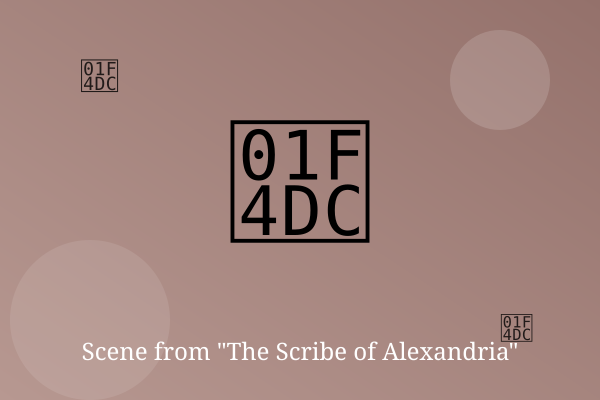

Chapter 1: Smoke Over the Harbor

Smoke drifted across the harbor, and Theon felt it in his throat before he saw the flames. The great library was burning.
The older scribes ran for the doors. Theon ran the other way, into the stacks, with his empty satchel.
He could carry only twelve scrolls. He picked the twelve that no one else had copied, and ran.
— End of Chapter —